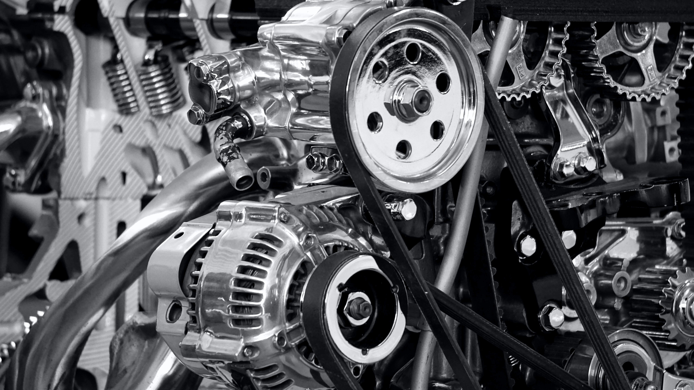

Mon lubrifiant change de couleur ; que cela signifie-t-il ?
Il n’y a rien d’anormal à voir la couleur de l’huile changer sans observer de problème de lubrification. Plusieurs facteurs peuvent causer un changement de couleur de l’huile après utilisation, notamment l’oxydation, les dépôts et la contamination. Même une simple hausse de la température de l’huile peut provoquer des changements de couleur d’un additif ou commencer l’oxydation de l’huile, assombrissant alors l’huile.
Par exemple, l’huile Mobil Velocite™ Oil No. 3 est une huile à très faible viscosité. En fonction de l’état du système et de l’huile précédemment utilisée dans le système, elle pourrait agir comme solvant modéré, solubilisant ainsi le matériau qui a pu être déposé à l’intérieur des conduites du système. Par conséquent, un changement de couleur peut avoir lieu mais cela n’affecte pas les performances du lubrifiant. De la même manière, les produits de la gamme Mobil Rarus™ SHC 1020 ont une formule antioxydante qui, lorsqu’elle est activée, peut changer la couleur du lubrifiant passant ainsi au rouge ou au violet. Il s’agit d’un comportement normal du produit et il n’y a aucun effet indésirable sur les performances du lubrifiant ou de l’équipement.
Les ingénieurs de Mobil ont trouvé de nombreux cas dans lesquels une huile peut changer de couleur, sans pour autant avoir d’impact sur ses performances. Cependant, pour vous assurer qu’il n’y a aucun problème avec le lubrifiant, vous pouvez prendre contact avec un distributeur Mobil™et envoyer un échantillon d’huile à notre laboratoire Mobil Serv℠ Lubricant Analysis. Le rapport de l’huile indiquera si le lubrifiant offre des performances conformes aux paramètres normaux, en se basant sur des tests de couleur et de performances.

Pneus
17/04/2023
Mes pneus? Quoi faire?
Vérifiez la pression d’air de tous vos pneus chaque mois, y compris celle du pneu de secours. Même si vous ne voyez pas de dommages, les pneus peuvent perdre jusqu’à 1 psi (0,07 bar) par mois. Ce dégonflage peut être accéléré par les fuites d’air résultant d’une perforation accidentelle, une fuite dans la valve ou le capuchon de valve, ou un défaut de la roue.
Vérifiez la pression d’air de vos pneus avant un long voyage.
Pour obtenir de meilleurs résultats, vérifiez la pression lorsque vos pneus sont froids (c.-à-d. avant de conduire le véhicule ou lorsqu’il a parcouru moins de 5 km à basse vitesse).
Comment vérifier la pression de mes pneus?
Insérez l’embout du manomètre dans le corps de la valve de votre pneu.
La tige qui sort du manomètre indique alors un nombre : c’est la pression en psi.
Le sifflement indique que de l’air s’échappe du pneu. Cette fuite d’air est négligeable, sauf si vous tenez le manomètre enfoncé trop longtemps.
Comparez la pression mesurée à la pression recommandée.
Si la pression est supérieure à la valeur recommandée, purgez de l’air jusqu’à ce que les valeurs soient égales. Si elle est inférieure, ajoutez de l’air jusqu’à ce que les valeurs soient égales.
Où puis-je trouver la pression recommandée pour mes pneus?
Dans le manuel du propriétaire du véhicule.
Sur une étiquette sur le montant de la porte conducteur ou la porte de remplissage du réservoir de carburant.
N’utilisez pas le nombre indiqué sur le flanc de votre pneu, car il n’indique pas la pression appropriée pour votre pneu.
À propos des manomètres
Prenez garde aux manomètres de gonflage fournis dans les postes d’essence. Ces manomètres sont souvent peu fiables.
Achetez un manomètre de bonne qualité et faites vérifier son exactitude par un professionnel des pneus.
La plupart des pneus sont gonflés à l’air comprimé. Mais certains détaillants de pneus ont commencé à gonfler les pneus de leurs clients à l’azote. (L’azote est tout simplement de l’air sec sans oxygène. L’air contient déjà près de 79 % d’azote.) Étant donné que l’azote remplace l’oxygène, moins d’air peut s’échapper de vos pneus et votre pression de gonflage se maintient plus longtemps. Malheureusement, il existe d’autres sources possibles de fuites (l’interface pneu/jante, la valve, l’interface valve/roue et la roue elle-même), qui empêchent le maintien garanti de la pression dans les pneus gonflés à l’air ou à l’azote.
Freins
14/03/2023
Pour ne pas aller à la rencontre du décor
Dans le passé, nous avons discuté des étapes à suivre pour remplacer les plaquettes de frein usées. Cependant, l’entretien des freins devrait être effectué de manière proactive, idéalement deux fois l’an. Cette tâche peut être effectuée en même temps que le changement saisonnier des pneus ou leur permutation.
L’entretien des freins comprend l’inspection, le nettoyage et la lubrification des composants des freins : plaquettes, disques, pièces de montage et étriers. Dans certains cas, il sera peut-être nécessaire de remplacer du matériel de fixation usé ou de repeindre les surfaces non protégées des étriers ou des tambours.
Si vous n’êtes pas certain de l’état des freins de votre véhicule, vous pouvez les évaluer en vérifiant le système et le fonctionnement.
La vérification du système s’effectue à l’arrêt, avant de prendre la route. Vérifiez l’état et le niveau du liquide de frein; il doit être clair et non contaminé et sa couleur proche de celle du liquide neuf. Vérifiez également que le témoin d’alerte du système de freinage est éteint. Parce que plusieurs situations peuvent faire allumer cette lampe-témoin, comme un indicateur d’usure de plaquette défaillant ou simplement le frein de stationnement qui est serré, il faut en déterminer la cause.
La vérification de fonctionnement évalue la puissance des freins lorsqu’ils sont utilisés. Lors de la conduite, vérifiez qu’il n’y a pas de bruits anormaux ni de vibration, que le véhicule ne tire pas d’un côté, et que la sensation de la pédale de frein est normale. Le manuel du véhicule peut contenir plus de renseignements sur la façon d’effectuer une vérification complète des freins.
Avant d’effectuer des travaux sur les freins de votre véhicule, assurez-vous d’avoir les plaquettes, les disques et du nettoyant pour freins. Les composants de frein, tout comme les véhicules, sont conçus en fonction de certaines conditions de conduite. Par exemple, il est tout aussi contre-indiqué de tirer une grosse roulotte avec une petite voiture que de monter des pièces de frein de piètre qualité sur une camionnette destinée au transport de lourdes charges. Ce qui veut dire que vous pouvez installer des plaquettes de frein de première qualité sur une voiture urbaine compacte, mais qu’il est inutile d’installer des plaquettes de frein haute performance.
Tous les produits NAPA Brakes sont conformes aux exigences du fabricant du véhicule, tant pour ce qui est de la forme que du fonctionnement. Le matériel de montage requis est fourni. C’est donc le choix idéal pour l’entretien de vos freins, car vous trouverez tout ce dont vous avez besoin dans la boîte.
L’entretien préventif est l’élément clé lorsqu’il s’agit des freins. Préparez-vous avant d’entreprendre l’entretien des freins et ne soyez pas surpris si les travaux sont plus importants que prévu.
Comme toujours, si vous avez des questions, les experts du magasin NAPA Pièces d’auto près de chez vous sont là pour vous aider.